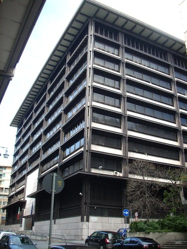
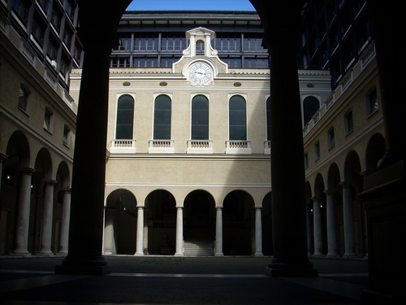
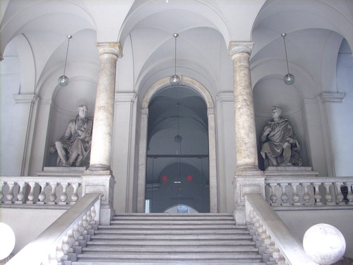
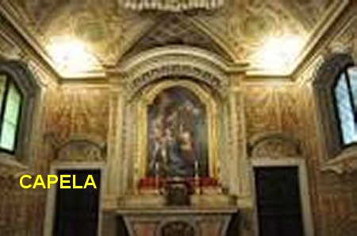
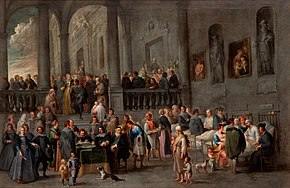
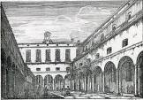
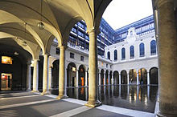

"COMPLEXO
HOSPITALAR PAMMATONE"
 Adjacente ao Grande Hospital
Genovês foi construída a Igreja da SANTÍSSIMA
ANUNCIATA, inicialmente dirigida pelos
Padres Franciscanos menores, e desde 1538 o comando ficou com os Padres
Capuchinhos, que lá permanecem até a presente data. Hoje o Templo Religioso é
conhecido como Igreja de Santa Catarina, e nela se conservam os restos mortais e
as relíquias de Santa Catarina Fieschi Adorno, que estavam na Capela do
Hospital Pammatone.
Adjacente ao Grande Hospital
Genovês foi construída a Igreja da SANTÍSSIMA
ANUNCIATA, inicialmente dirigida pelos
Padres Franciscanos menores, e desde 1538 o comando ficou com os Padres
Capuchinhos, que lá permanecem até a presente data. Hoje o Templo Religioso é
conhecido como Igreja de Santa Catarina, e nela se conservam os restos mortais e
as relíquias de Santa Catarina Fieschi Adorno, que estavam na Capela do
Hospital Pammatone.
O Pammatone em si cresceu e
permaneceu como o maior Hospital Genovês, em plena atividade desde a sua
fundação em 1423, até o início do século XX.
No século XVIII, a nobre senhora
Anna Maria Pallavicini doou ao Hospital cerca de 125.000 liras genovesas, que
foram utilizadas na construção e ampliação de unidades importantes e necessárias
ao Hospital, a fim de continuar em plenitude com seu atendimento aos pobres, aos
mais necessitados, as famílias com problemas sérios de saúde, e as pessoas
paupérrimas, que estando doentes nada tinham para pagar os tratamentos. O
Pammatone cumpria sua missão caridosa e edificante. Concluídas as reformas e
novas construções necessárias ao bom atendimento, as despesas subiram a 600.000
liras genovesas, valor que foi coberto e liquidado por famílias nobres de
Gênova.
Todavia, durante a Segunda
Grande Guerra Mundial, o bombardeio alemão foi indiscriminado em todos os
locais, visando mesmo à destruição total inclusive das unidades que cuidavam da
saúde. O Hospital Pammatone foi atingido em três locais pelo bombardeio raivoso
alemão. A destruição foi maior no antigo edifício. Entretanto, uma grande parte
foi salva, assim como as lindas colunatas internas e a escadaria de um dos
acessos.
Mas necessitando de outra grande
reforma, em face da destruição, começou a ser desativado, considerando que agora
no século XX já existiam outros Hospitais Genoveses, devidamente equipados e em
condições de atender a população necessitada. E então, por sua beleza e sua
história, o Hospital Pammatone começou a ser preparado para se transformar no
Tribunal de Justiça Genovês. Mas ainda são visíveis na área ocupada pelo
Tribunal de Justiça, no hall de entrada do moderno edifício, duas lápides
memoriais antigas que lembram o fundador do Hospital Pammatone, senhor
Bartolomeo Bosco, e também a preciosa dívida de gratidão da instituição
Hospitalar à Santa Catarina Fieschi Adorno.
A SEGUIR FOTOGRAFIAS DO
HOSPITAL PAMMATONE:







ESTA FOTO A ESQUERDA É A CAPELA DO
HOSPITAL, ONDE ERA O QUARTO DELA.

PALÁCIO DA JUSTIÇA DE GÊNOVA (ANTIGAS DEPENDÊNCIAS
DO HOSPITAL)

 -
PRÓXIMA PÁGINA
-
PRÓXIMA PÁGINA
-
PÁGINA ANTERIOR
-
RETORNA AO ÍNDICE